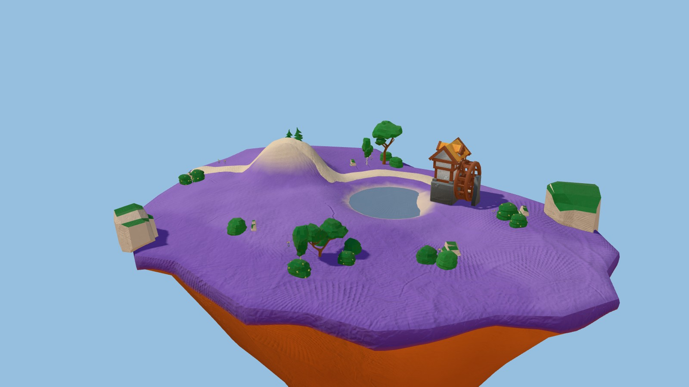
Regel ab jetzt: Namensfilter TILE_NAME in src/environment/kits.ts (cliff, ground, path, bridge, platform, fence, crops …) plus Sichtprüfung jedes Steins in der Aufreihung. Ein automatischer Kachel-Detektor (Anteil achsparalleler Flächen) trennt nicht sicher: Kenney-Steine sind von Haus aus kastig. Er bleibt nur Hinweis.
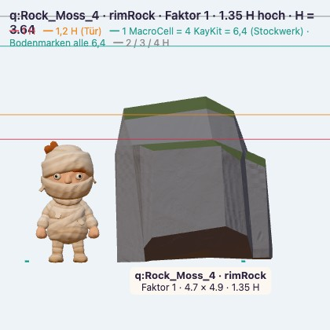
Rock_Moss_4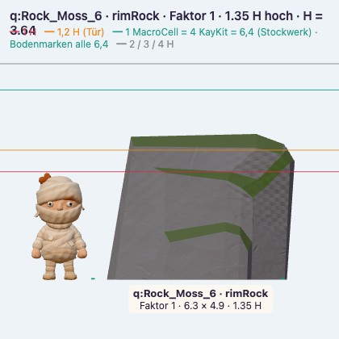
Rock_Moss_6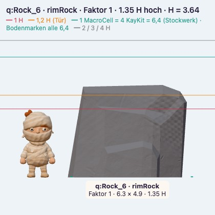
Rock_6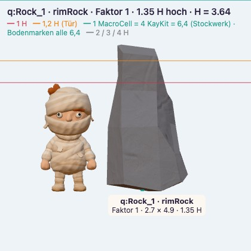
Rock_1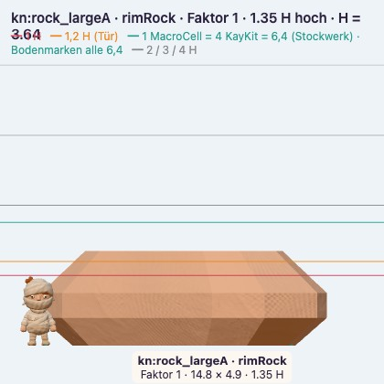
rock_largeA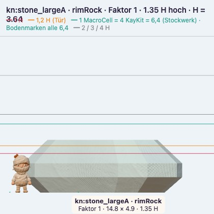
stone_largeA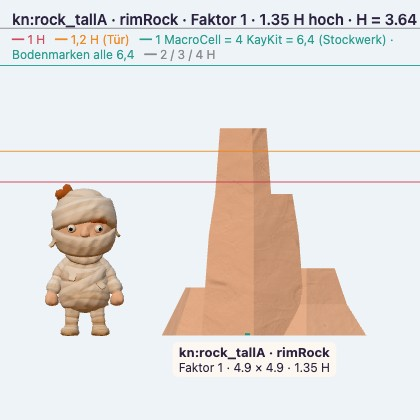
rock_tallA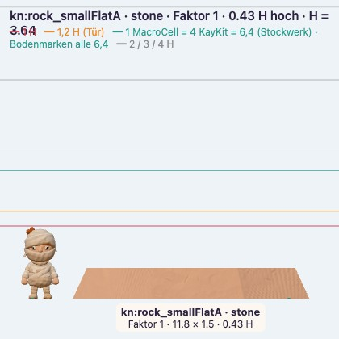
rock_smallFlatA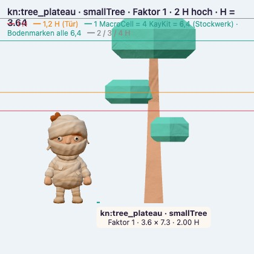
tree_plateau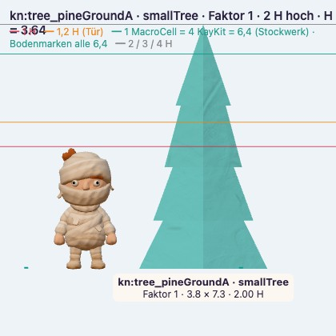
tree_pineGroundA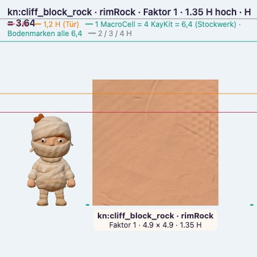
cliff_block_rock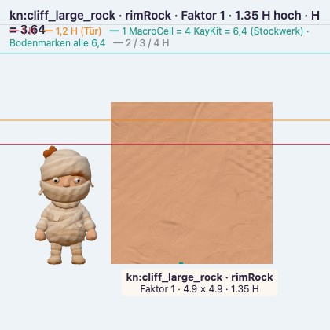
cliff_large_rock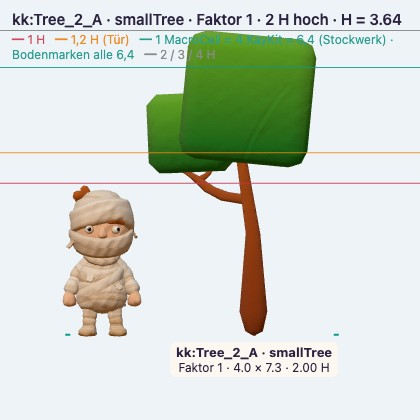
Tree_2_A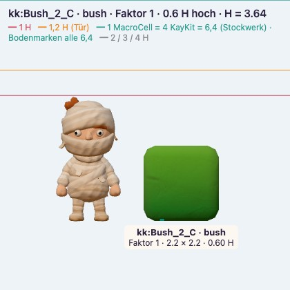
Bush_2_C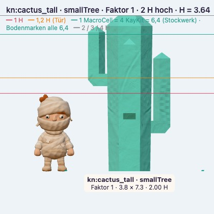
cactus_tall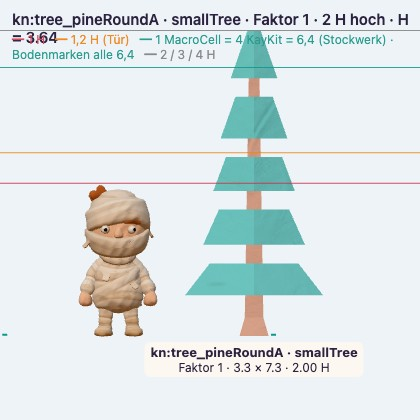
tree_pineRoundA